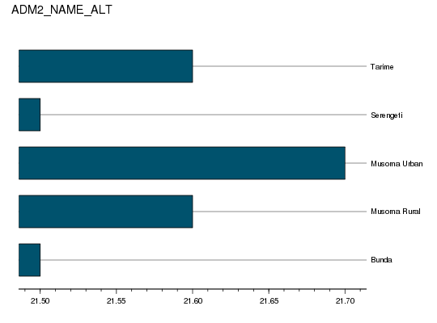

getLayer(var, iso3 = "SSA", by = NULL, ids = NULL, collapse = TRUE, as.class = "data.table")
by variables. If FALSE always return
all pixel values (useful for plotting and to convert to spatial formats).as.class="list" returns a well-constructed list with variable metadatavar indicators aggregated by by domains
Workhorse method to subset and/or aggregate HarvestChoice layers.
This method also aggregates classified variables by continuous variables.\
e.g. getLayer(var=c("whea_h", "AEZ16_CLAS"), by=c("ADM2_NAME_ALT", "bmi")).
It does so by returning the dominant class of a classified variable within each by
class, and by automatically classifying any continuous variable passed to by
using default value breaks as specified in the variable metadata.
The dominant class of x is defined as names(which.max(table(x))). For
convenience this function is wrapped as dominant in this package.
Layers can also be summarized over a spatial area (passed as an integer array of CELL5M ids).
Note that calling getLayer(...) is equivalent to using the convenience method
hcapi(...) with the same arguments.
# Mean BMI and cassava yield across districts in Tanzania x <- hcapi(c("bmi", "cass_y"), iso3="TZA", by=c("ADM1_NAME_ALT", "ADM2_NAME_ALT")) xISO3 ADM0_NAME ADM1_NAME_ALT ADM2_NAME_ALT bmi cass_y 1: TZA United Republic of Tanzania Arusha Arumeru 21.2 NaN 2: TZA United Republic of Tanzania Arusha Arusha 22.2 NaN 3: TZA United Republic of Tanzania Arusha Karatu 21.2 NaN 4: TZA United Republic of Tanzania Arusha Monduli 21.2 NaN 5: TZA United Republic of Tanzania Arusha Ngorongoro 21.2 NaN --- 124: TZA United Republic of Tanzania Unguja North North B 21.7 NaN 125: TZA United Republic of Tanzania Unguja South Central 22.9 NaN 126: TZA United Republic of Tanzania Unguja South South 23.2 NaN 127: TZA United Republic of Tanzania Unguja Urban West West 23.2 NaN 128: TZA United Republic of Tanzania buffer gridcell buffer gridcell NaN NaN# Plot results for Mara province require(lattice)Loading required package: latticerequire(latticeExtra)Loading required package: latticeExtra Loading required package: RColorBrewerasTheEconomist( barchart(ADM2_NAME_ALT~bmi, data=x[ADM1_NAME_ALT=="Mara"])) # Mean BMI and cassava yield across districts in Tanzania in GeoTIFF x <- hcapi("bmi", iso3="TZA", format="tif")Warning message: colorTables valid for Byte type only in some drivers Warning message: Unable to set color table
x[1] "./hcapi-tza-bmi.tfw" "./hcapi-tza-bmi.tif" "./hcapi-tza-bmi.tif.aux.xml" [4] "./meta.csv" "./README.md" "./datapackage.json"# Load the generated TIF raster (one band only) require(raster) x <- raster(x[1])Error in .rasterObjectFromFile(x, band = band, objecttype = "RasterLayer", : Cannot create a RasterLayer object from this file.# Plot the `bmi` series plot(x)Warning message: NAs introduced by coercion Warning message: no non-missing arguments to min; returning Inf Warning message: no non-missing arguments to max; returning -Inf Error in plot.window(...): need finite 'ylim' values# Equivalent request at the command line # curl http://hcapi.harvestchoice.org/ocpu/library/hcapi3/R/hcapi \ # -d '{"var":"bmi", "iso3":"TZA", "format":"tif"}' \ # -X POST -H 'Content-Type:application/json' # /ocpu/tmp/x0bc1ac9bdf/R/.val # /ocpu/tmp/x0bc1ac9bdf/stdout # /ocpu/tmp/x0bc1ac9bdf/warnings # /ocpu/tmp/x0bc1ac9bdf/source # /ocpu/tmp/x0bc1ac9bdf/console # /ocpu/tmp/x0bc1ac9bdf/info # /ocpu/tmp/x0bc1ac9bdf/files/bmi--TZA.tfw # /ocpu/tmp/x0bc1ac9bdf/files/bmi--TZA.tif # /ocpu/tmp/x0bc1ac9bdf/files/bmi--TZA.tif.aux.xml # /ocpu/tmp/x0bc1ac9bdf/files/DESCRIPTION # /ocpu/tmp/x0bc1ac9bdf/files/README # Use wget (at the command line) to download all generated files in a ZIP archive # wget http://hcapi.harvestchoice.org/ocpu/tmp/x0bc1ac9bdf/zip # The method may be expanded to summarize classified (discrete) variables by continuous # variables. For example the call below returns the dominant agro-ecological zone and # average stunting in children under 5 over Ivory Coast's provinces by elevation class x <- hcapi(c("AEZ8_CLAS", "stunted_moderate"), iso3="CIV", by=c("ADM1_NAME_ALT", "ELEVATION")) xISO3 ADM0_NAME ADM1_NAME_ALT ELEVATION AEZ8_CLAS stunted_moderate 1: CIV Ivory Coast 18 Montagnes NA Humid NaN 2: CIV Ivory Coast 18 Montagnes (3e+02,5e+02] Humid NaN 3: CIV Ivory Coast 18 Montagnes (5e+02,9e+02] Sub-Humid NaN 4: CIV Ivory Coast 18 Montagnes (9e+02,1e+03] Humid NaN 5: CIV Ivory Coast Agneby NA Humid NaN 6: CIV Ivory Coast Bafing NA Sub-Humid NaN 7: CIV Ivory Coast Bafing (3e+02,5e+02] Sub-Humid NaN 8: CIV Ivory Coast Bafing (5e+02,9e+02] Sub-Humid NaN 9: CIV Ivory Coast Bas Sassandra NA Humid NaN 10: CIV Ivory Coast Bas Sassandra (3e+02,5e+02] Humid NaN 11: CIV Ivory Coast Denguele (3e+02,5e+02] Sub-Humid NaN 12: CIV Ivory Coast Denguele (5e+02,9e+02] Sub-Humid NaN 13: CIV Ivory Coast Fromager NA Humid NaN 14: CIV Ivory Coast Fromager (3e+02,5e+02] Humid NaN 15: CIV Ivory Coast Haut-sassandra NA Humid NaN 16: CIV Ivory Coast Haut-sassandra (3e+02,5e+02] Humid NaN 17: CIV Ivory Coast Lacs NA Sub-Humid NaN 18: CIV Ivory Coast Lagunes NA Sub-Humid NaN 19: CIV Ivory Coast Marahoue NA Humid NaN 20: CIV Ivory Coast Marahoue (3e+02,5e+02] Humid NaN 21: CIV Ivory Coast Moyen Comoe NA Humid NaN 22: CIV Ivory Coast Moyen Comoe (3e+02,5e+02] Humid NaN 23: CIV Ivory Coast Moyen-Cavally NA Humid NaN 24: CIV Ivory Coast Moyen-Cavally (3e+02,5e+02] Humid NaN 25: CIV Ivory Coast N'zi Comoe NA Sub-Humid NaN 26: CIV Ivory Coast N'zi Comoe (3e+02,5e+02] Sub-Humid NaN 27: CIV Ivory Coast Savanes NA Sub-Humid NaN 28: CIV Ivory Coast Savanes (3e+02,5e+02] Sub-Humid NaN 29: CIV Ivory Coast Savanes (5e+02,9e+02] Sub-Humid NaN 30: CIV Ivory Coast Sud Bandama NA Sub-Humid NaN 31: CIV Ivory Coast Sud Bandama (3e+02,5e+02] Humid NaN 32: CIV Ivory Coast Sud Comoe NA Humid NaN 33: CIV Ivory Coast Vallee Du Bandama NA Sub-Humid NaN 34: CIV Ivory Coast Vallee Du Bandama (3e+02,5e+02] Sub-Humid NaN 35: CIV Ivory Coast Worodougou NA Sub-Humid NaN 36: CIV Ivory Coast Worodougou (3e+02,5e+02] Sub-Humid NaN 37: CIV Ivory Coast Worodougou (5e+02,9e+02] Sub-Humid NaN 38: CIV Ivory Coast Zanzan NA Sub-Humid NaN 39: CIV Ivory Coast Zanzan (3e+02,5e+02] Sub-Humid NaN 40: CIV Ivory Coast Zanzan (5e+02,9e+02] Sub-Humid NaN 41: CIV Ivory Coast buffer gridcell NA NA NaN ISO3 ADM0_NAME ADM1_NAME_ALT ELEVATION AEZ8_CLAS stunted_moderate# An equivalent request at the command line # curl http://hcapi.harvestchoice.org/ocpu/library/hcapi3/R/hcapi/json \ # -d '{"var":["AEZ8_CLAS","stunted_moderate"], "iso3":"CIV", "by":["ADM1_NAME_ALT","ELEVATION"]}' \ # -X POST -H 'Content-Type:application/json'